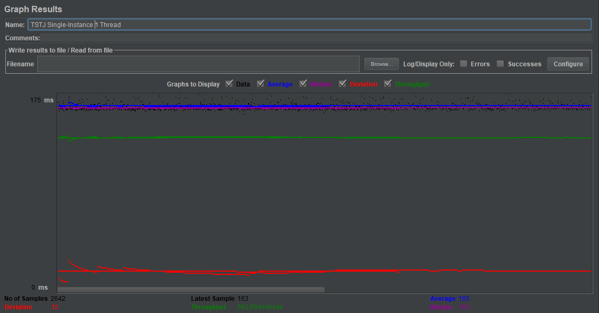
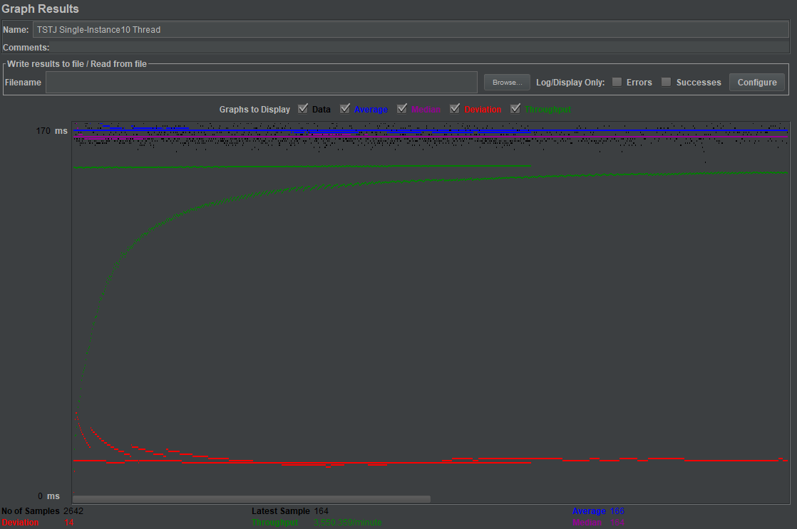
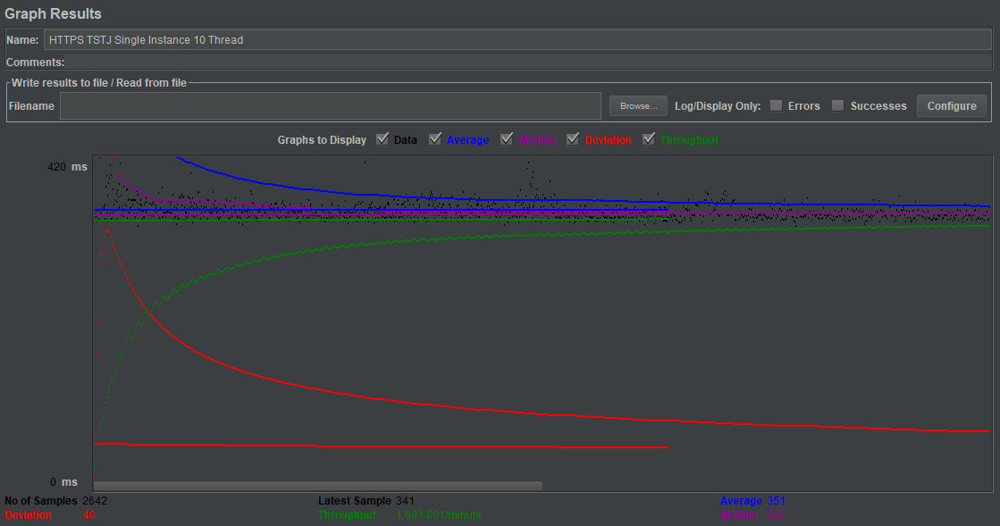
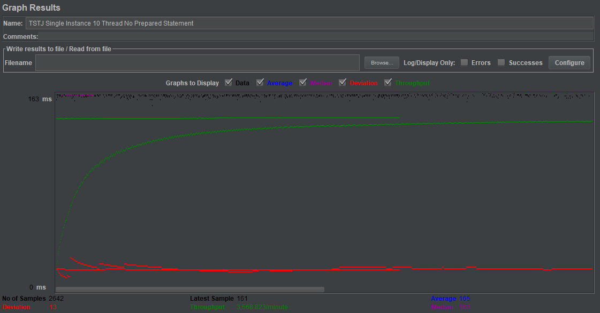
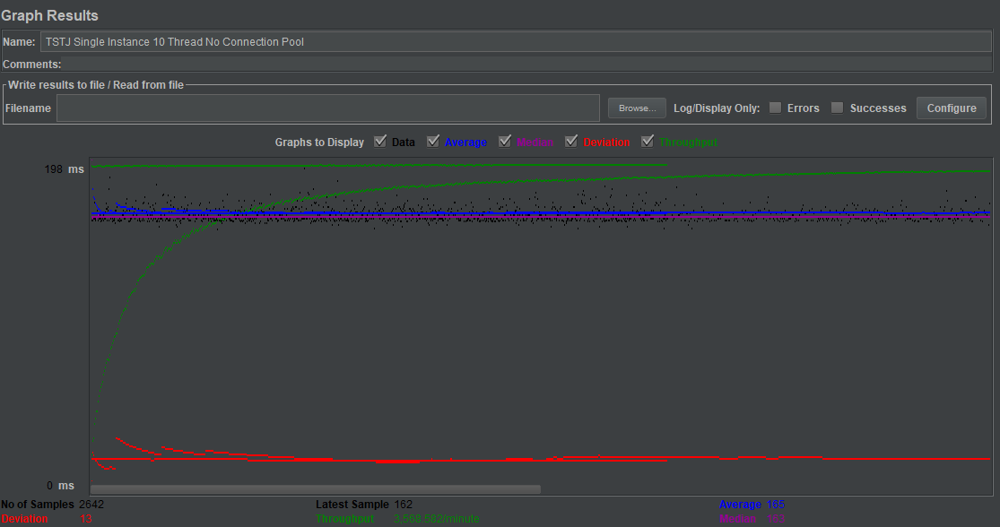
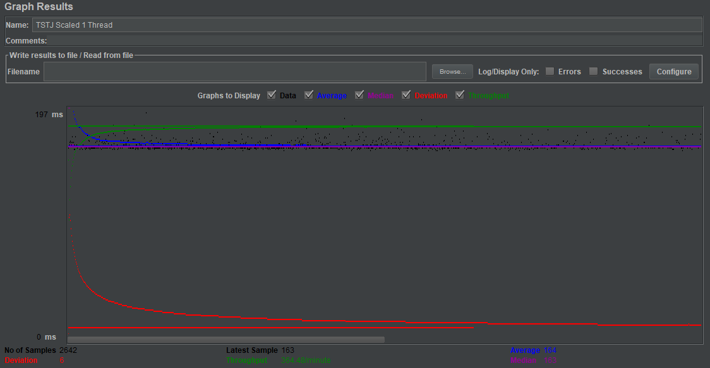
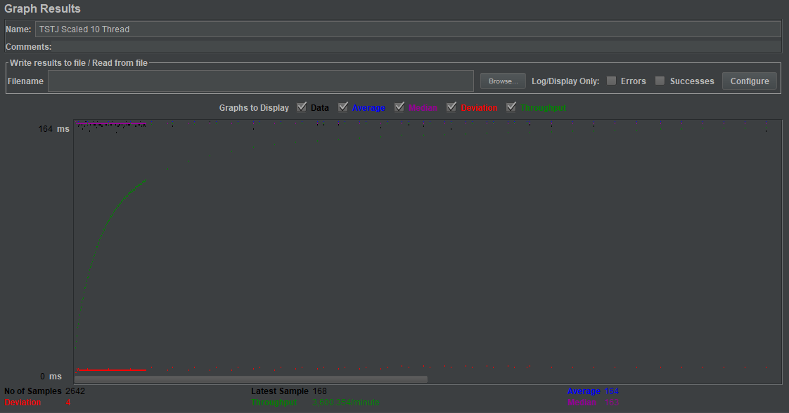
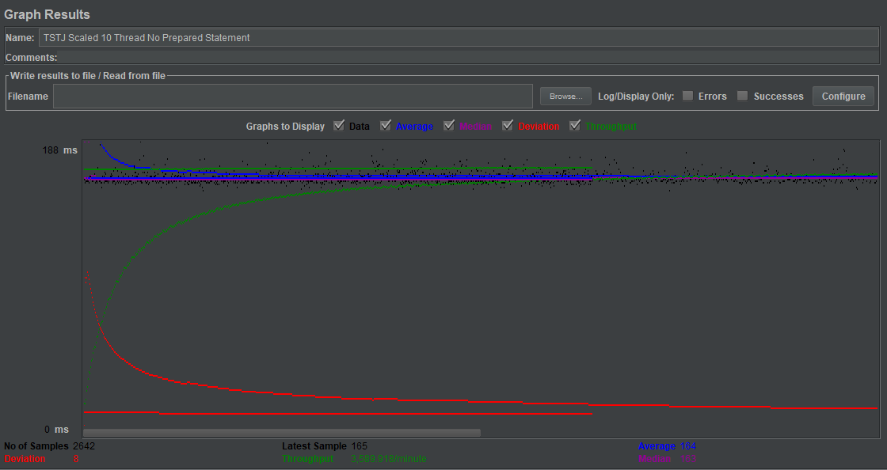
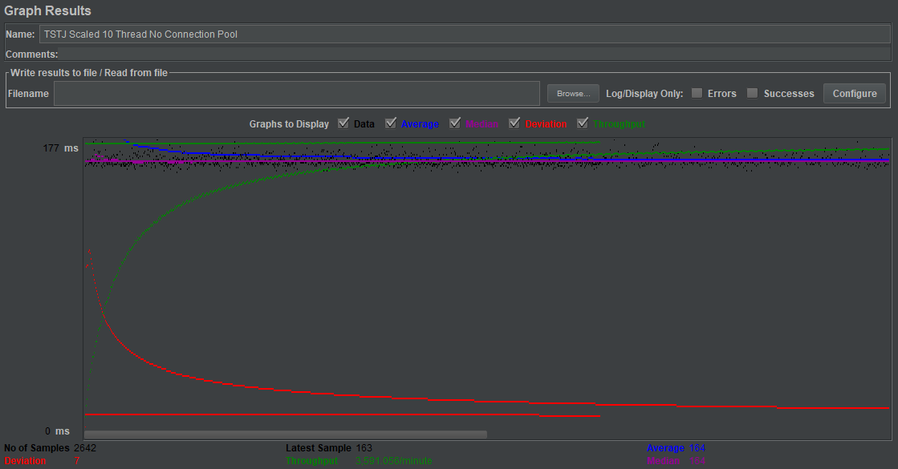

| Single-instance version cases | Graph Results Screenshot | Average Query Time(ms) | Average Search Servlet Time(ms) | Average JDBC Time(ms) | Analysis |
| Case 1: HTTP/1 thread |  | 165 | 1740060.8141559425 | 1370793.7077971234 | Average query time is about 165 ms. I think this is reasonable since we are only doing 1 thread that does 1 request at a time the server does not have to balance many connections at once. Therefore it is able to serve that 1 thread fully without much delay besides waiting for the servlet to finish. Here we also see that average servlet time and average jdbc time is also the fastest compared to all the single instance version cases. Once again this is to be expected as it does not have to worry about balancing multiple connections at once allowing it to do each request as fast as possible with little delay. |
| Case 2: HTTP/10 threads |  | 166 | 2338930.751703255 | 1734228.404996215 | Here we see that average query time is 166ms which is 1 ms slower thant using 1 thread. I think this is too be expected since it has to balance multiple connections at once. We also see that average query time, servlet time, and jdbc time is much slower than using 1 thread. I think the reason for this is that since we only have one database the cpu is being used to balance the request to tomcat while balancing multiple database connections. Therefore rather than giving the maxiumum resources to each request it must split it up among the 10 different threads making requests. |
| Case 3: HTTPS/10 threads |  | 351 | 2970929.151021953 | 1895658.6532929598 | Here we see that https average query time is about double the time for 1 and 10 thread in http. We also see a greater slowdown compared to using http 10 thread and 1 thread. I expect the reason for this slow down is the fact that we are using https. By using https we make a trade off in which we trade security for speed. Every request made and interaction between client and server the data must be encoded to ensure it is secured. |
| Case 4: HTTP/10 threads/No prepared statements |  | 165 | 1941045.2392127176 | 1474492.9988644966 | Here we see a speed up which I am not sure why. I would expect that it would slow down in comparison to the 10 thread since we have to compile each query. |
| Case 5: HTTP/10 threads/No connection pooling |  | 165 | 1891979.9825889478 | 1458508.8024224073 | Here we also see a speed up in comparison to case 2 which i am not sure why. I would expect the average to be a larger number since the instance would have to create a new connection every request while balancing more threads connecting to tomcat at once. |
| Scaled version cases | Graph Results Screenshot | Average Query Time(ms) | Average Search Servlet Time(ms) | Average JDBC Time(ms) | Analysis |
| Case 1: HTTP/1 thread |  | 164 | 1534728.3614685845 | 978456.3001514005 | Here we see that average query time is the same for all scaled version cases. However we do see the slowest result for Average Search Servlet Time and Average JDBC Time compared to the other scaled version cases. I think the reason for this is that we are only ever utilizing one thread at time which will use only one instance. That is why in comparison to others it is much slower. Also in comparison to single instance 1 thread it is still faster and that is due to the fact that we use instance 1 to serve the request and relay the request to the master or slave instance. This allows for master and slave instance to utilize more processing power because it is not serving any connections to tomcat but only serving database connections |
| Case 2: HTTP/10 threads |  | 164 | 1070508.8171839516 | 774442.8531415594 | Here we see a significant increase in Average Search Servlet Time and Average JDBC Time compared to single thread and I think this is because we are able to serve multiple requests at once utilizing two databases rather than one. Therefore each database has to balance less connections at once and has more resources to use per request. |
| Case 3: HTTP/10 threads/No prepared statements |  | 164 | 1357212.4489023467 | 841972.952687358 | Here we see a slowdown in Average Search Servlet Time and Average JDBC Time in comparison to case 2 and this is expected because we have to compile each query everytime we connect and request from the database. |
| Case 4: HTTP/10 threads/No connection pooling |  | 164 | 1395999.5314155943 | 835353.3928841787 | Here we see a slowdown in Average Search Servlet Time and Average JDBC Time in comparison to case 2 and case 3 and this is expected because every time there a request to the database we must make a new connection to the database. So rather than recycling a connection we are making more. This makes it so that the database is listening to many more connections rather than reusing them which causes it to use more resources. |